The Return Of The Cordwood House
Part I: This is about the book about the house that Jack Built.
By the Mother Earth News editors
September/October 1977
Remember those great old monster movies . . . and the way they always seemed to turn into a whole series of motion pictures based on a single character? You know . First there was FRANKENSTEIN . .. then THE RETURN OF FRANKENSTEIN . . . then BRIDE OF FRANKENSTEIN . . . then SON OF FRANKENSTEIN . . . then FRANKENSTEIN MEETS THE WEREWOLF . . . and on and on and on.
Well, that's the way we're beginning to feel about the Jack Henstridge family's dynamite article, WE BUILT A $75,000 HOUSE FOR ONLY $10,000, which appeared in MOTHER NO. 45. Because, since publishing that piece, the Henstridge Clan has been buried under an avalanche of mail . . . we've heard from a second promoter of the stackwood (but with a difference) building concept . . . and good ole Jack Henstridge hisself has been kind enough to send us an Alberta Oil Sands Environmental Research Program booklet entitled "Housing for the North . . . The Stackwall System" (how's that for being generous to the "competition"?) which outlines yet a third approach to constructing substantial-yet-snug-andextremely-low-cost homes from cordwood.
So stand back.'Cause here's an update on all these developments . . . in a special three-part feature that we cleverly call:
PART 1: THIS IS ABOUT THE BOOK ABOUT THE HOUSE THAT JACK BUILT
EDITOR'S NOTE: There are several builders of do-it-yourself airplanes and members of the Experimental Aircraft Association on MOTHER's staff and one of these no'er-do-wella--for some reason-was talking to Harvey Swack (of Baby Great Lakes-a particular homebuilt aircraft-fame) a few months ago when Harvey said, "Hey! 1 know of a great story for THE Mother Earth News°. There's this friend of mine, see, up in Canada, who's building a whole house-and it's a big one-out of cordwood. You should get in touch with him."
So we did. And that friend turned out to be Jack the Henstridge, who immediately wrote back saying, "1 know all about THE Mother Earth News and I'm already working up an article for you guys. I'll bring it down when 1 get it done." And he did. And that's the article you read in MOTHER NO. 45.
At the time Jack visited our offices, though, he was deeply engrossed in the planning, writing, and production of a self-published builder's manual on the subject of stackwood construction. And he asked us a lot of questions about publishing (since we were already in the business and all) and we tried to be helpful. The main thing we kept telling Jack, however, was that what looked easy to him-the publication of a guide about building a low-cost cordwood house-would (based on our experience) probably turn out to be about as much hard work as the actual fabrication of the house itself. But we encouraged him to go ahead anyway, since we thought that he had a lot to contribute to MOTHER-type folks all over the world. And Jack did go ahead and he did have more trouble than he'd anticipated. Which explains the tone of mock-exasperation in parts of this section of our cordwood construction feature.
Dear MOTHER:
Please don't say, "I told you so!" You did. And please don't say, "Live and learn." Learn, I have . . . but do you call this livin'?
I've had more hassles trying to get this book printed than enough. As a matter of fact, I think I'll do a book on it! More than
once I've been tempted to pack everything up and trot back to Hendersonville and eat my humble pie. As the enclosed mimeographed letter will explain, I became a Charter Victim of Murphy's Law on this one. The real "cruncher" was when the paper got lost on its way from the manufacturer!
But everything finally worked out OK. Even if I did have to sit down and personally address a letter of explanation to the first 600 people who ordered my book and who had to wait four weeks or more to get it. (Would you believe that just getting those letters out took me a full day and a half, with no breaks, and gave me a stiff neck and sore arm?)
In spite of all the hassles, though, I've enjoyed it. It's been a very educational trip and I know a lot more now than I did when I started.
Some of the letters we've received have really made all the effort worthwhile too. Like the one from the woman who wrote that she and her husband were building a "conventional" log cabin when he was involved in an auto accident that injured his back and left him unable to lift anything heavy. They were ready to give up when they read the article and now they think they can build their own house after all. That makes us feel real good and we've gotten a lot of mail like that.
What a fantastic cross section of people read your magazine! We've received orders from doctors, lawyers (I'm not sure about Indian chiefs), soldiers and sailors (of all ranks), and many other nice folks. Lots of aviation people too. One fellow up in Alaska recognized the Baby Great Lakes hanging in our living room and wrote to say that he's building one too. As an airplane nut, of course, I found that really fascinating.
And here's another interesting point: About 40% or more of the books we've sold to MOTHER's readers have been bought by single women. Their letters often say something like, "This looks like the sort of thing I can handle physically." One woman even said that she and her daughters were going to build a chickenhouse first for practice!
We've gotten some funny letters too. One guy asked us to suggest a fast-growing tree that he could plant and requested that we answer as soon as possible so he could get started right away. 1 coulda sold him a bag of acorns I guess, but I told him to scout around for old telephone poles or railroad ties that'd been discarded instead. Then there was the fellow who wrote that he and "my old lady.
ROBERT L. ROY: PART II: A SOMEWHAT DIFFERENT APPROACH TO CORDWOOD CONSTRUCTION
It was with considerable interest that I read Jack Henstridge's article about stackwood construction ("We Built a $75,000 House for Only $10,000" in MOTHER NO. 45), as I am well ac quainted with this building technique. My wife, Jaki, and I have been living in our homebuilt cottage, "Log End", for a year and a half and a book based on our experience (How to Build LogEnd Houses, Drake, $12.95 cloth, $6.95 paper) will appear in August.
I feel that there are three areas where prospective builders might well benefit from a different point of view.
[1] FRAMEWORK. I found the lack of framework in both the Henstridge house-and in the Steward house mentioned with it-disconcerting to say the least. And when Mr. Henstridge says that he started with "relatively green wood" and that he anticipates a four-foot accumulation of snow on his sod roof (a very heavy roof to begin with), I honestly fear for the longevity o1 his beautiful home.
There is little or no chemical bond between mortar and wood. Concrete blocks and lintels are often cast in wooden frames for that very reason (the frames are easy to remove). Besides that, logs check and shrink. The greener the chunks of wood used in cordwood construction, then, the looser the log-ends will even tually become in the mortar matrix. And even very dry log-ends will work slightly as the seasons change. Therefore, it's just as important to incorporate a load-carrying framework into a stack wood house as it is to include the stovewood masonry itself.
A good framework should support all of the roof load on a stackwood house. Our own cottage (see photographs) has a stun dy post-and-beam framework made of sound old barn timbers Such barn beams, we feel, are probably the best timbers to use with stovewood masonry infilling because they're dry (it would take five years to sufficiently season freshly cut beams of the same dimensions). They are also attractive and offer a pleasing contrast to the masonry, something like the Elizabethan "black and white" style of construction.
[2] TYPE OF WOOD. While it is true that "any kind of wood can be used to build a stackwood wall, as long as the wood is dry", I believe that cedar is by tar the best for any form of stovewood masonry construction. Remember that the end grain is left exposed to the weather in a cordwood wall and that water does not shed easily from such a rough surface. This means that you should take every possible precaution to protect stackwood construction from rot.
Cedar, as I've already pointed out, is far more resistant to rot than any other kind of wood. If you can't get cedar, try for Douglas fir, western larch, or old utility poles discarded by the telephone and power companies. Hardwoods and soft pine have the least resistance to rot of all and should be avoided whenever possible. It's also a very good idea to build a minimum twofoot overhang onto the roof over any stovewood masonry wall.
[3] INSULATION. Another reason I like cedar is because it is light and airy and, therefore, must have more insulation value than most other woods. Tightly grained hardwoods have a low "R" (resistance) value of .91 per inch, and softwoods, in general, have an "R" value of about 1.25. Although I've never seen test figures for cedar, I'm sure that it must run up to about 1.5 per inch . . . and-as you know-the higher the "R" number, the better the insulation.
Jaki and I devised a method of insulating the mortar between and around the chunks of wood in our stovewood walls similar to the insulating technique used by Mr. Henstridge. Instead of fitting thousands of chunks of styrofoam around the log-ends, however, we cut long strips of fiberglass batts with a skill knife and then wove them in. I believe our idea is faster and easier. (EDITOR'S NOTE: Also more expensive to both the pocketbook and the planet since Jack salvaged his styrofoam for free from a local dump.)
In closing, I'd like to add that we've had a great deal of success in using the following sawdust-mortar mix as a matrix in our stackwood walls: 6 parts of sand, 9 of cedar sawdust, 1 of Portland cement, 1-112 of masonry cement, and 2 of lime. Not only does this mix help to insulate the mortar, but we've found that it dries slowly and shrinks hardly at all. It is a somewhat confusing mix, however, and I believe that a simplified version (3 parts sand, 4 or 5 of sawdust, 1 part portland cement, and 1 part lime) would accomplish the same thing, since masonry cement is essentially nothing but portland cement to which lime has been added.
My thanks to Drake Publishers, Inc., for permission to use the accompanying photographs from How to Build Log-End Houses. The book should be published in August and I hope you'll watch for it are really turned on by the article and here's $7.00 cash for your book" . . . but who signed his letter only "Curley and Family" and included no address! I figured that the guy either had long, wavy hair or was completely bald . . . so I wrote to the postmaster in care of the cancellation on the stamp and asked if he knew of a "Curley and Family". To date I haven't received an answer.
We also got a great laugh from the couple who wrote, "Please send us your book . . . we need all the help we can get" . . but who enclosed the wrong half of their money order! (The right end came in a couple of days later.)
Thank God for the funny letters! It's been rougher than we ever thought it would be getting this book off the press and out to all the good folks who've bought it. I don't think we'd have made it without a few laughs along the way.
Again, MOTHER .. thanks. You know I mean it. Even if you have ruined our lives! Why, you've made us famous! We have no more privacy. No more sleeping in late in the mornings. All we do now is get up and spend the entire day processing mail from your millions of readers. We love it!
Love,
Jack Henstridge
And here's the letter that Jack sent out to the first 600 MOTHER readers who ordered his book ... telling them why they'd had to wait a month or more to receive the guide.
Dear People:
Believe me when I tell you that it is more difficult to put out a book on how to build a cordwood home than it is to build one. I want to thank you all for being so patient. Here is a brief rundown on what has happened:
[1] A "publishing house" wanted to handle the whole thingtypesetting, layout, printing, distribution, and promotion-and sell my book in hard cover for $15 a copy and pay me a royalty. I was tempted, but I felt that the selling price was too high. I wanted to keep the price as low as possible and deliver the maximum book for the minimum bucks.
[2] My finances were "zilch", though, so I tried to find a spon sor. The people I contacted were very interested. After about a month went by, however, I learned that they felt that the money they'd be able to put into the project would only scratch the surface. I also learned that if I had endorsed these people's product in the book and on its cover, that those endorsements would have constituted advertising. I would then have had to pay 12% federal excise tax plus S% provincial sales tax on the printing and material used m the book. And that was about three times what we could have afforded. More time gone!
[3] I finally found someone to do the typesetting who didn't ask for money "up front". These were the people who put out a terrific little weekly newspaper here in New Brunswick called The Plain Dealer. In order to keep my costs down, they even let me use a part of their layout table when we did the paste-ups for our book and their darkroom for processing the manual's photos.
[4] Everythin,9 eventually was "camera ready". But then we ran into another slight problem: After a couple of weeks of waiting and wondering . . . the printer who was going to do the job went out of business!
[5] Centennial Print and Lytho then came to the rescue. The negatives were made. The halftones of the photos were made. All that remained was the making of the plates, and the presses would roll. And then our paper got lost on its way to the printer from the manufacturer!
Well, anyway. Here it is. Finally. 1 hope you enjoy my book, Building the Cordwood Home. It's been a real adventure for me. And again, thanks for waiting.
Love,
Jack Henstridge
And, once again, for all you folks who are still interested in learning how Jack Henstridge and his family built an 80-foot-long, very distinctive, four-bedroom house with a living room large enough to accommodate a full-sized, man-carrying aircraft suspended from the rafters like a giant mobile (all for only $10,000, or less than $4.00 a square foot) . . . pick up a copy of MOTHER NO. 45 and read Jack's article.
And then, if you think you'd like to build a house like Jack's for your very own, drop $7.00 in the mail and order out a copy of his book from Jack Henstridge, RR 1, Oromocto, New Brunswick, Canada E2 V 2G2.-The Editors.
PART III: THE STACKWALL SYSTEM . . .HOUSING FOR THE NORTH
EDITOR'S NOTE: The following report is excerpted from the more detailed paper, Housing for the North ... The Stackwall System, published jointly by Alberta Environment and Environment Canada, and dated December 1976. The excerpts which follow are reprinted by permission.
The Alberta Oil Sands Environmental Research Program (AOSERP) contracted with the Northern Housing Committee of the University of Manitoba to design and supervise the construction of a "stackwall" structure to house the 5,000-gallon potable water tank for the AOSERP research facility at Mildred Lake, Alberta. Most of the work was done by native people of the Fort McMurray area as a training project.
Construction was done during the cold weather of November and December 1975. The final outside dimensions of the building are 32 X 16 X 9 feet.
The stackwall method is to lay two-foot log lengths side by side, and mortar them in place to form a permanent log pile. Wood shavings are added between the log layers to improve the insulation. Logs of various diameters can be randomly placed, thereby eliminating waste of materials or time.
The advantages of the stackwall construction include:
[1] The high insulation value of correctly constructed walls lowers the overall operating costs of the building and equipment;
[2] The construction technique is labor intensive and thus a large percentage of expenditures can be channelled to man-hours as opposed to capital oriented machine-hours;
[3] The use, where possible, of indigenous materials reduces the capital output for materials.
The building was instrumented to determine heat retention and ease of heating. The insulating ability (or thermal resistance) of the structure was found to rate at least R18, which is about equivalent to a 6"- thick glass or mineral fiber insulation batt.
The total cost was $10,960.20 which included $6,685.85 for labor. Thus, if a person built it on his own during warmer weather the cost would be very low.
LOG GATHERING, CUTTING, AND SORTING
The collection of the necessary logs started 28 October 1975 with a crew of three men. The logs-a variety of spruce, poplar, and pine-had been cut and piled for approximately three years. They were located 12 miles from the construction site and were transported in a 3/4-ton truck with a load capacity of about 0.75 cords.
The cutting and sorting began while collecting and transporting continued. The crew was increased to four men, two collecting and two cutting. This procedure, using recorded man-hour data, required 38.6 man-hours per cord. It includes the time involved in construction of a suitable jig to enable more accurate cutting of logs with available handheld chain saws. The tolerance, measured by random sampling, was 1/2". Lags within the range 23-3/4" to 24-1/4" were accepted, all others discarded. Also cut were the "sawn three sides" 8 X 8's. They were ripped at a nearby sawmill and delivered to the construction site in 12foot lengths. For construction purposes, they were cut into 30" lengths and used as corner blocks (discussed later).
In total, 10.6 cords of logs and 288 lineal feet of 8 X 8's were cut, costing a total of $1,706. In terms of price per cord of wood used in construction, the figure would be $160 per cord, and in terms of price per square foot of wall area (materials only, no labor), the figure would be $1.71. The labor-to-material cost ratio is 1.7:1.
WALL CONSTRUCTION
Prior to the actual laying of logs to form walls, the foundationcomprised of a network of railway ties-was accurately placed surrounding the previously positioned water tank. The railway ties network was 36 X 16 feet and was made up of a pair of ties running parallel 24" apart (outside measurement) and interconnecting at the corners. The foundation was squared by a right-angle triangle method and covered by polyethylene. Second, the building materials and equipment needed in wall construction were transported to the site. Included were 200 cubic feet of wood shavings and the first of many loads of hand-shovelled sand from a nearby pit. Also obtained, in anticipation of colder weather conditions, was a 1,000-board-foot bundle of 2 X 4's to be used in the construction of a polyethylene enclosure-40 feet long, 28 feet wide, and 10 feet high-in order to cover the building and provide a small working area. The enclosure was initially heated by a small 100,000 Btu/hr. propane heater during the night; however, as average temperatures dropped, a larger 350,000 Btu/hr. heater and accessory generator were required almost continuously.
The initial wall construction was done by a crew of six. One mixed mortar (ratio . . . 5 sand : 2 cement : 1 lime) in a gasoline powered mixer; another hauled the mortar by wheelbarrow to the various locations. In addition, he supplied the builders with sufficient logs, 8 X 8 blocks, and shavings so work could continue uninterrupted. Two worked on corners, which involved laying the mortar on the foundation and placing two 30" 8 X 8 sawn-three-sides blocks 24" apart (outside measurement). Then more mortar was applied between the blocks' exposed faces and a log inserted along with shavings to fill the inner gap. (The shavings were mixed with hydrated lime to prevent insect infestation . . approximately one shovelful of lime per wheelbarrow of shavings.) Next, mortar beads were placed along the edges of the already positioned blocks and two more blocks were placed perpendicularly to them. Then a log and shavings were again placed in the gap and the process continued.
Once the corners were built up, log layering could proceed. This entailed laying a bead of mortar along the foundation, approximately 3" on the inside and outside edges of the ties, then filling the gap with shavings. A log was then placed in position and another bead of mortar applied on that log's inside and outside edges. Shavings were packed in that gap and another log positioned. This was done, of course, in rows along the entire length of the wall, using larger diameter wood at the base of the wall.
The fact that the corner construction was allowed to proceed ahead of log-laying enabled the two men laying logs to use a string line, which kept the wall section plumb and straight, with the corners as end points. The corners were set level and plumb as each layer was added, and the mortar was allowed to set before the corners were used as reference end points. Upon setting, the mortar was finished with a masonry jointer to a depth of 1/4" into the surface of the wall, thus accenting the log composition of the wall.
This type of corner construction and string line proved to be very efficient since it allowed construction of individual walls as opposed to having all four walls built up simultaneously, as required in other construction methods. The south and east walls were built first, because problems of mortar transportation would have been encountered if the north and west walls had been built first. Both the south and east walls were difficult to work on because of the limited working space in the enclosure at those points. An interesting comparison was carried out on the south wall. Consistent diameter logs were used in the lower portion of the wall and the string line was used to keep the wall plumb and maintain the row level. In the upper portion of the wall, the log placement was random and the string line was used simply as a plumb and straight line reference. Extra man-hours are needed for the first method. We found that the extra time taken to obtain consistent diameter logs and maintain level rows was not rewarded with an improved overall appearance. Using random log selection construction was appreciably faster and no adverse construction problems resulted.
The east wall construction included the placement of the window and door frames. These were constructed from rough sawn 2 X 6 spruce. The door frame was four 2 X 6's set side by side with a dimension of 7'2" by 2'10" inside measure. The window frame was three 2 X 6's set side by side with a dimension of 2' by 2'. The window frame was placed flush with the outside wall but set 6" from the inside wall surface. The door frame was flush with both inside and outside wall surfaces. Both frames were cross backed to avoid warping and twisting. Note that the door frame was set on the foundation while the window frame was placed at a height to allow a common set of lintels to be used for both door and window. Also note the extended nails in the frames, used to bind the frames to the mortar as the wall was built around them.
The next step was to place the door and window lintels, which were ripped-three-sides spruce logs anchored into the mortar wall with "extended" nails. The window sill was made of a 4 X 4 load divider. The outside window sill had a drip edge cut by chain saw tip.
The top plate was placed next. The west and east walls had 2 X 4's placed on the inner and outer edges, also anchored by
"extended" nails. For the south and north walls, the top plates were a pair of 8 X 8 sawn-three-sides timbers running parallel on the wall edges. Large top plates on the east and west walls were required to support the great weight of the stackwall gable.
The final step was to construct the gable ends. For this portion of the stackwall, no shavings were placed in the gap because a high insulating value was not required. Special enclosures were required, however, to attempt to maintain an above-freezing temperature for the mortar curing process. Finally, a 2 X 4 was placed on edge and anchored along the 7/12 slope of the constructed gable to act as a nailing member parallel to the roof trusses.
In total, the wall construction, including the preparation and subsequent cleanup of mortar from finished work, required 1,247 manhours. In terms of man-hours per square foot of wall, calculations are: 1.25 man-hours per square foot or 0.80 square feet per man-hour. The total cost of the wall construction phase was $4,983.63. In terms of cost per square foot, it was $5.01 per square foot. The ratio of labor to material cost was 1.9:1.
Once the stackwall work was completed and the mortar well along on its curing process, the polyethylene enclosure was removed and the 2 X 4's used in the door and roof truss construction.
DOOR AND WINDOW CONSTRUCTION
The door and window construction is unique in that the units were constructed on site more economically than "factoryproduced" units. The double door and triple-pane window have performed very well to date and definitely should be considered forfuture projects.
As previously explained, the frames for the doors and windows were placed within the east wall during wall construction. It was decided that a two-door system be employed . . . one non-insulated outside door and one well-insulated inside door. Both were made windproof by placing polyethylene between the 1 X 8 layers. The outside door was made of 2 X 4's flatside, and 1 X 8's. The 2 X 4's were nailed in a rectangular form, with dimensions slightly less than the rectangular frame opening. Then 1 X 8's were nailed on the outside, long enough to cover the 2 X 4's and the frame itself. Polyethylene was placed on the inside of the rectangular form and 1 X 8's were nailed in place, forming the second side of the door.
The inside door was also made of 2 X 4's, flatside, and 1 X 8's. The 1 X 8's covered the 2 X 4 rectangle on both sides, and the gap was filled with discarded Fiberglass insulation from the AOSERP research trailers. The door fit entirely within the outer frame, flush with the inner wall surface. The 24" depth of the 2 X 6 frame served as a storm porch in that the outer door could be shut before the inside door was opened and vice versa. This stopped the flow of cold or warm air.
Both doors were hung by triple gate hinges and planed to fit more precisely. Then a propane torch was used to flame the wood, to prevent shrinkage and rotting.
The window was constructed within the already positioned frame, entirely on the middle set of 2 X 6's of which the frame was made.
For the window, quarter-round trim was nailed and sealed on the outer perimeter of the middle 2 X 6's. The sealant was applied to the quarter-round's inner face and the window glass placed against it. Further quarter-round was then placed on the inner face of the glass and sealed against it, then nailed. Thus, one pane was sealed around its perimeter on both sides of the middle 2 X 6's. This procedure was repeated twice, forming independent panes of glass surrounded by quarterround.
The door and window construction, as described, cost a total of $445.04: $375.15 labor, $69.89 materials. Compared to $700.00 for materials in the factory-built case, this is a considerable saving. The labor to material cost ratio is 5.4:1.
ROOF AND CEILING
The roof and ceiling were constructed in a conventional manner with a few minor differences.
The trusses were constructed from the 2 X 4's used in the temporary enclosure. They were all built on the ground according to specifications, lifted and nailed into place on 24-inch centers. It is important to note that when the top plates were anchored, they were as level as possible so that the trusses could be constructed identically and not individually to com. pensate for any differences in elevation. Once the trusses were nailed in place, they were braced with random diagonal 1 X 8's, and the ceiling was started.
For the ceiling construction, the horizontal members of the trusses were used for the nailing member on which 1 X 8 ribbing could be placed at 24-inch centers perpendicular to the trusses. The 1 X 8's were also placed along the horizontal members to complete the ceiling ribbing. This ribbing formed a network on which 4 X 8 sheets of 3/8" plywood were nailed to sheath the ceiling. Each sheet was secured by eighty 1-1/2" galvanized nails. This large number of nails in the plywood ensured firm support for the 18" of shavings to be placed in the attic. Then 1 X 8's were placed on the upper edge of the trusses' horizontal members, in positions where the lower 1 X 8 ribbing had not been located. This further supported and distributed the weight of the shavings.
The roof was sheathed with 1 X 8 and 1 X 6 lumber with the gable ends extended 2 feet to form the overhang. As the roof sheathing neared completion, the shaving material was shovelled into the attic and evenly distributed at a depth of 18-20". The roof was then tar-papered with overlapping 24" strips bottom to top, and subsequently covered in cedar shakes using an overlap of 9".
The blocking at the top plate, between the trusses, was completed using 1 X 8 lumber. Screening was used at intervals of 9 feet to replace the blocking and complemented the gable end vents. During the winter when the attic air movement is not critical, the screens could be closed by redistributing the shavings over them.
The building was completed 19 December 1975 and, to date, with the 200,000 Btu/hr. propane heater, has maintained a relatively constant inside temperature.
Data are being collected to allow an estimation of the overall thermal insulating value of the structure. Preliminary calculations indicate that the wall's overall resistance is at least R18.
CONCLUSIONS
From the evidence available to date Some tentative conclusions about heavy stackwall structures can be made
[1] With care taken over details such as corners, overhangs, and treatment of openings. the appearance of a stackwall building is very pleasing
[2] Such a building can be built with re-.anvely unskilled labor, provided supervision is available and care taken.
[3] A high proportion of the total cost can be expended locally.
[4] The overall cost per square foot of structure, after taking into account smallness of the building (high wall/ floor area ratio) and adverse operating conditions at Mildred Lake, appears competitive with conventional forms of construction.
[5] The thermal resistance of the walls appears to be close to the theoretical R20 to R25 predicted for fully dry walls.
[6] The building appears to be durable and relatively maintenance-free (except for caulking in the fall of 1976). However, longer-term observations must be made before this can really be established with confidence.
Overall, the Northern Housing Committee feels that the experimental building at Mildred Lake has been successful in demonstrating a laborintensive method of construction, and will provide useful information on performance of such a structure over the years. It is hoped that it might provide some stimulus to others in the Mildred Lake area who may wish to undertake some "sweat equity" building projects, especially housing.
|
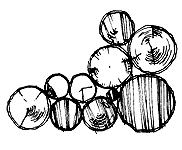 PHOTOS BY DAN JERRY |
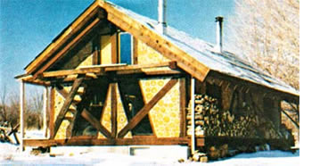 PHOTOS BY D.B HALDER |
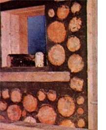 PHOTOS BY D.B HALDER |
|
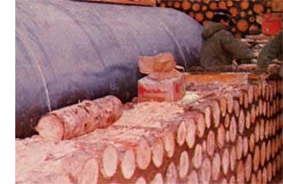 PHOTOS BY D.B HALDER |
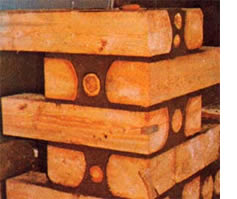 HOTOS BY W.R MACDONALD |
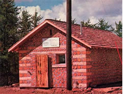 PHOTOS BY ROGER SMITH |
|
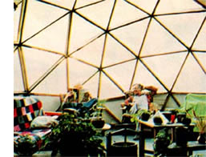 PHOTOS BY ROGER SMITH |
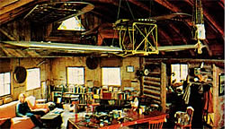 PHOTOS BY ROGER SMITH |
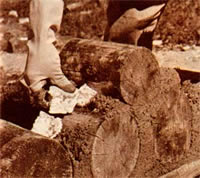 PHOTOS BY ROGER SMITH |
 PHOTOS BY DAN JERRY |
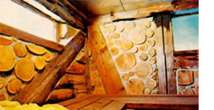 PHOTOS BY D.B HALDER |
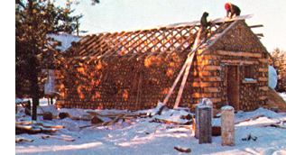 |
|
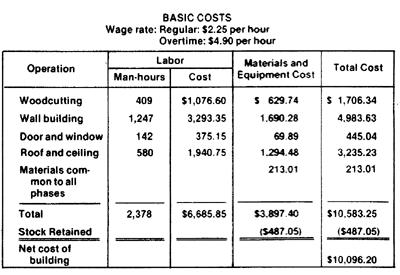 |
|
|